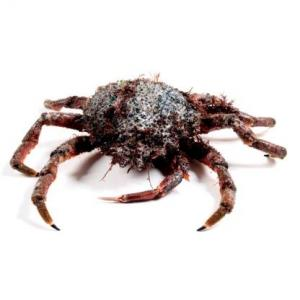
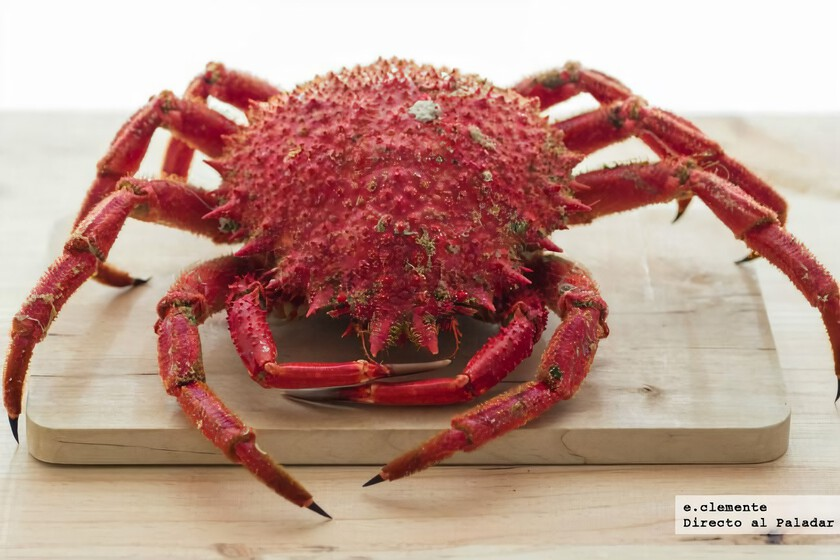
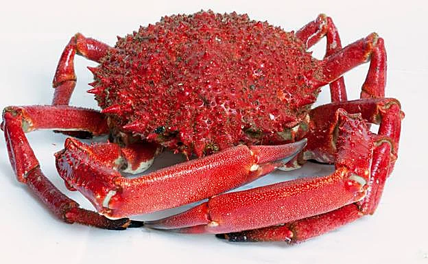
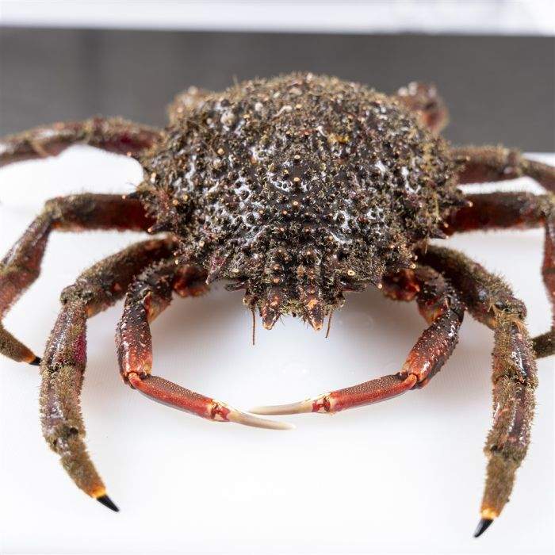

Centollo
También conocido como Changurro o Txangurro, Cámbaro, Araña, Cranca, Pateiro, Bruño o Cangrejo velludo. Es un crustáceo braquiuro y decápodo. Pertenece a la familia Majidae, la misma que los Cangrejos. Vive en la costa en fondos rocosos y arenosos. Habita en profundidades mayores de 100m.
Centollo Maja squinado
(Eng) Spiny spider crab
(Fr) Araignée européenne
Peso: 500 gr - 4 kg Dimensiones: 12 - 20 cm